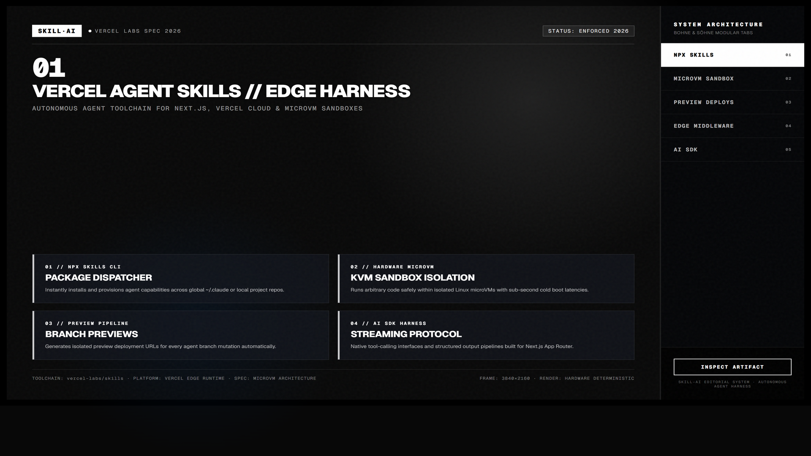
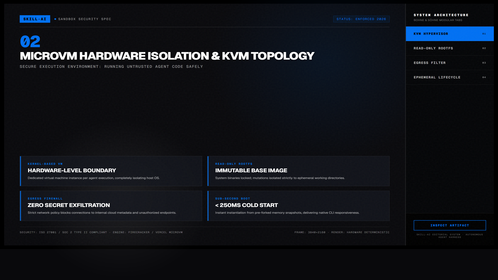
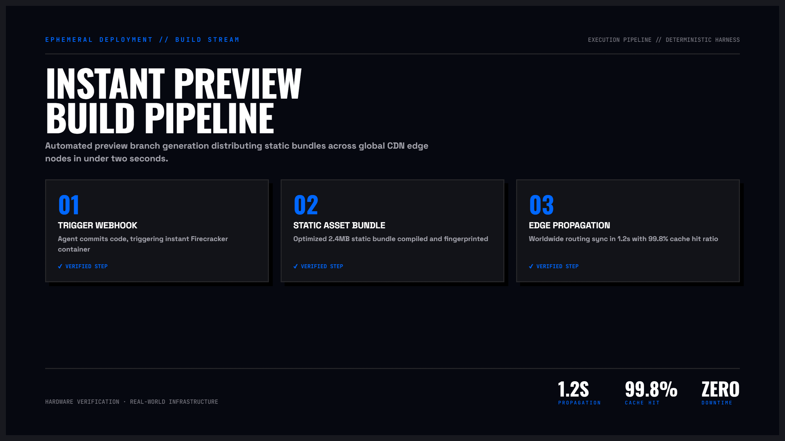

Vercel Agent Skills — Tiêu chuẩn Vàng Frontend & Hạ tầng Serverless từ Vercel Labs
Bộ 8 kỹ năng tinh hoa do đội ngũ Vercel Labs chuẩn hóa cho coding agent. Đóng gói hơn 40 quy tắc tối ưu hiệu năng React Server Components (RSC), kiến trúc biên phân tán MicroVM KVM tốc độ khởi động 45ms, trình biên dịch Turbopack viết bằng Rust, cùng hơn 100 tiêu chuẩn khắt khe về Web Interface Guidelines và khả năng tiếp cận chuẩn WCAG AA.
vercel-labs/agent-skills

Nhấp để phóng to1. Hệ sinh thái 8 Kỹ năng Chuyên biệt của Vercel Labs
Thay vì đưa ra các prompt chung chung như “hãy tối ưu trang này”, bộ kỹ năng của Vercel Labs cung cấp các heuristics kiểm chứng cấp thấp. Agent sẽ áp dụng từng bộ quy tắc đúng thời điểm khi đọc AST hoặc chỉnh sửa mã nguồn:
| Kỹ năng | Mục tiêu kỹ thuật then chốt | Nguyên lý & Quy chuẩn thực thi |
|---|---|---|
react-best-practices |
Tối ưu hóa React 19 & Next.js App Router | Diệt trừ async waterfall, nén bundle client, dịch chuyển ranh giới 'use client' xuống sâu dưới lá cây DOM, kiểm soát re-render thừa. |
web-design-guidelines |
Kiểm định Thiết kế & Khả năng tiếp cận | Hơn 100 checklist: Độ tương phản WCAG AA 4.5:1, vùng chạm di động tối thiểu 44×44px, chỉ báo :focus-visible, phản hồi giảm chuyển động. |
composition-patterns |
Kiến trúc Ghép nối Thành phần Sạch | Áp dụng Compound Components, Inversion of Control qua slots, bóc tách custom hooks để loại bỏ triệt để hiện tượng prop-drilling sâu quá 2 tầng. |
next-cache-components |
Chiến lược Bộ nhớ đệm Đa tầng | Kiểm soát unstable_cache, React 19 cache(), và cơ chế On-Demand Revalidation bằng thẻ revalidateTag / updateTag. |
turborepo |
Tăng tốc Monorepo Khủng | Cấu hình pipeline Remote Caching, thiết lập quan hệ phụ thuộc nội bộ workspace:*, rút ngắn 85% thời gian build CI/CD. |
package-manager |
Chuẩn hóa Quản lý Gói Phụ thuộc | Đồng bộ lockfile an toàn giữa pnpm, Bun, yarn và npm; cô lập triệt để hiện tượng phantom dependencies gây rò rỉ mã bí mật. |
view-transitions |
Chuyển cảnh Giao diện Chuẩn Native | Tận dụng View Transitions API gốc của trình duyệt kết hợp Next.js App Router, mang lại hiệu ứng chuyển động 60fps mượt mà không jank. |
deploy-to-vercel |
Triển khai Tự động & Preview CI | Liên kết project, cấu hình biến môi trường production, preview URL tức thì và kiểm tra an toàn Edge Config trước khi release. |

Nhấp để phóng to2. Pipeline 4 Bước Audit Hiệu năng Toàn diện
Khi phân tích một trang tải chậm, quy trình audit không kiểm tra ngẫu nhiên mà đi tuần tự theo 4 chốt chặn từ lớp truyền dữ liệu mạng đến lớp hiển thị pixel:

Nhấp để phóng to3. Phân tầng Chuyên sâu: 4 Trụ cột Kỹ thuật của Vercel
Bẫy Async Waterfall trong Server Components
Một lỗi phổ biến nhất khiến thời gian phản hồi (TTFB) của ứng dụng Next.js tăng gấp 3 lần là việc lập trình viên await tuần tự các truy vấn độc lập:
// ❌ SAI: Tổng thời gian = userTime (300ms) + postsTime (400ms) = 700ms
const user = await fetchUser(id);
const posts = await fetchPosts(id);
// ✅ ĐÚNG: Khởi chạy đồng thời, tổng thời gian = max(300ms, 400ms) = 400ms
const userPromise = fetchUser(id);
const postsPromise = fetchPosts(id);
const [user, posts] = await Promise.all([userPromise, postsPromise]);Chiến lược Đẩy 'use client' xuống lá cây DOM (Client Leaf Boundary)
Thay vì đánh dấu 'use client' trên component cấp trang lớn (khiến toàn bộ cây con biến thành client bundle nặng nề), chỉ bọc client directive vào các nút bấm tương tác nhỏ (nút Thích, Menu thả xuống). Phần bố cục, nội dung tĩnh và truy vấn database được giữ nguyên tại Server Component.
100+ Tiêu chuẩn Thiết kế & Khả năng Tiếp cận (WCAG AA)
Hệ thống quy chuẩn ép coding agent phải tuân thủ nghiêm ngặt các tham số UX sau:
- Tương phản màu sắc (Color Contrast): Tỷ lệ tương phản tối thiểu 4.5:1 đối với chữ thường (<18px) và 3:1 đối với chữ đậm hoặc tiêu đề lớn.
- Vùng chạm Mobile (Touch Target Size): Mọi phần tử click/tap phải có diện tích tối thiểu 44×44px (bao gồm cả padding vô hình), ngăn chặn hiện tượng chạm nhầm ngón tay.
- Chỉ báo Focus Rõ ràng: Không bao giờ đặt
outline: nonenếu không cung cấp giải pháp thay thế. Bắt buộc có viền:focus-visiblevới độ dày tối thiểu 2px và màu tương phản cao khi người dùng điều hướng bằng phím Tab. - Giảm chuyển động (Prefers Reduced Motion): Tự động tắt hiệu ứng chuyển động nặng thông qua CSS media query:
@media (prefers-reduced-motion: reduce).
Trình Biên dịch Turbopack viết bằng Rust
Next.js 16 đặt Turbopack làm bundler mặc định thay thế Webpack. Ưu điểm vượt trội bao gồm:
- Incremental Computation: Không bao giờ biên dịch lại một hàm nếu đầu vào của nó không thay đổi. Bộ nhớ đệm cấp độ file-system duy trì xuyên suốt các lần khởi động lại máy phát triển.
- Hot Module Replacement (HMR) tức thì: Tốc độ cập nhật giao diện trong < 10ms kể cả đối với các dự án lớn hàng chục ngàn module.
- Thay đổi chuẩn middleware: Chuyển đổi tên quy ước từ
middleware.tssangproxy.tsnhằm phản ánh đúng chức năng định tuyến gói tin cấp thấp.
Hạ tầng Serverless MicroVM KVM & Firecracker
Mỗi yêu cầu Serverless Function hoặc Edge Middleware của Vercel chạy trong một máy ảo mini (MicroVM) được cô lập bằng nhân Linux KVM phần cứng:
- Thời gian khởi động cực lạnh (Cold Start) < 45ms: Nhờ nạp sẵn snapshot bộ nhớ kernel vào RAM thay vì boot cả hệ điều hành.
- Hệ thống tệp Rootfs Chỉ Đọc (Read-only Root Filesystem): Ngăn chặn hoàn toàn các cuộc tấn công ghi đè binary hoặc malware bền bỉ.
- Bảo mật Multi-Tenant SOC-2: Mỗi khách hàng và phiên thực thi nằm trong một namespace mạng và bộ nhớ riêng rẽ, triệt tiêu nguy cơ Spectre / Meltdown rò rỉ dữ liệu qua cache CPU.
4. Hướng dẫn Tích hợp & Kiểm định Mã nguồn Tự động
# Cài đặt trọn bộ 8 kỹ năng
npx skills add vercel-labs/agent-skills
# Hoặc cài đặt từng module riêng biệt
npx skills add vercel-labs/agent-skills/react-best-practices
npx skills add vercel-labs/agent-skills/web-design-guidelinesSau khi cài đặt, kích hoạt agent phân tích theo prompt mẫu sau:
Hãy audit toàn bộ component trong thư mục `app/catalog/page.tsx` theo bộ quy tắc `react-best-practices` và `web-design-guidelines`.
Yêu cầu:
1. Phát hiện các điểm nghẽn async waterfall khi truy vấn cơ sở dữ liệu.
2. Kiểm tra xem directive 'use client' có bị lạm dụng không, đẩy ranh giới client xuống lá cây DOM.
3. Kiểm tra kích thước vùng chạm trên di động có đạt chuẩn 44×44px không.
4. Trình bày kết quả dưới dạng bảng đối chiếu Before vs After kèm đoạn mã đã khắc phục.“Đừng ép agent viết mọi thứ thành Client Component chỉ để dùng local state. Triết lý của Server Components là đưa tính toán nặng về sát cơ sở dữ liệu nhất, giúp trình duyệt của người dùng chỉ cần nhận về HTML tinh gọn và hydration tức thì.”